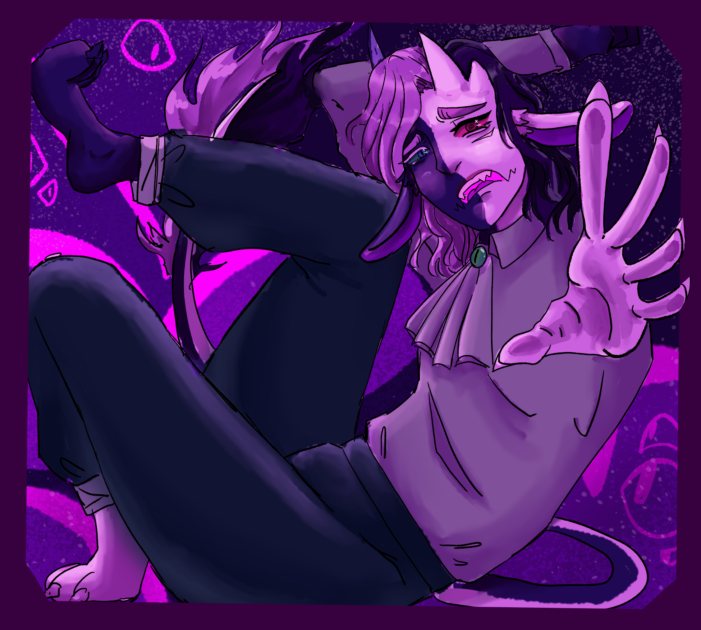
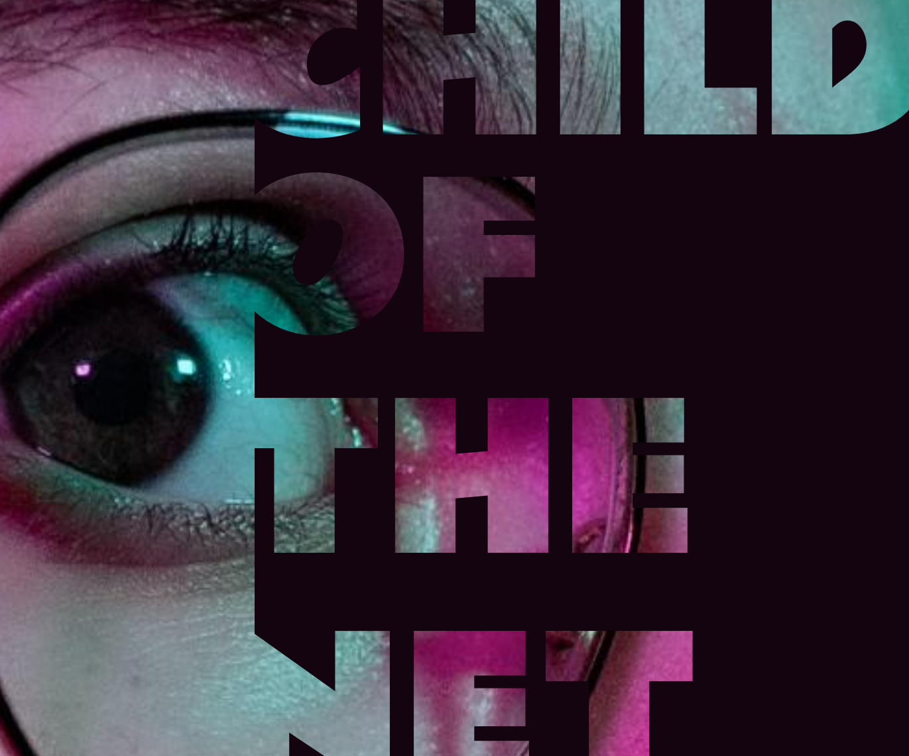
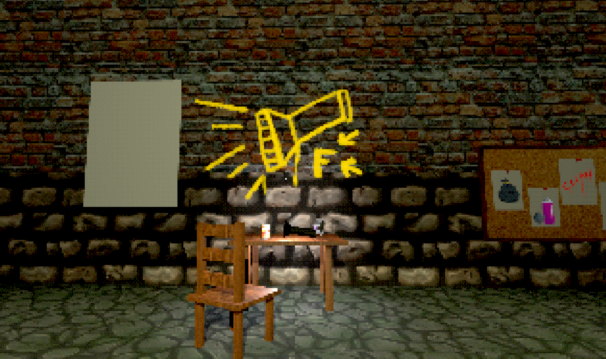
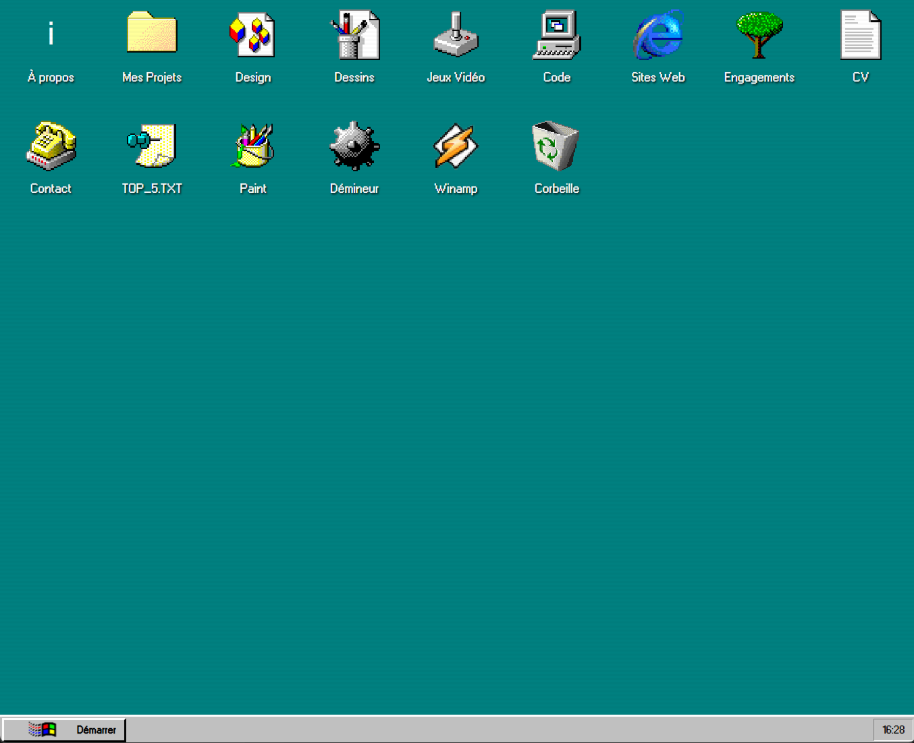
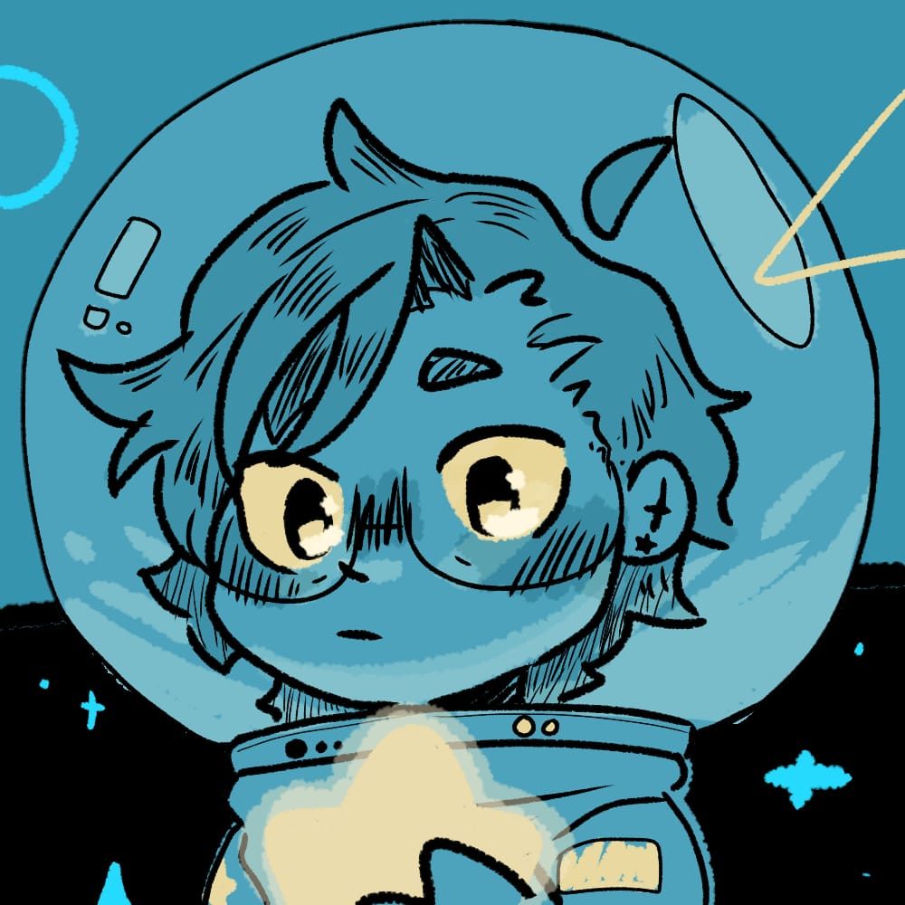
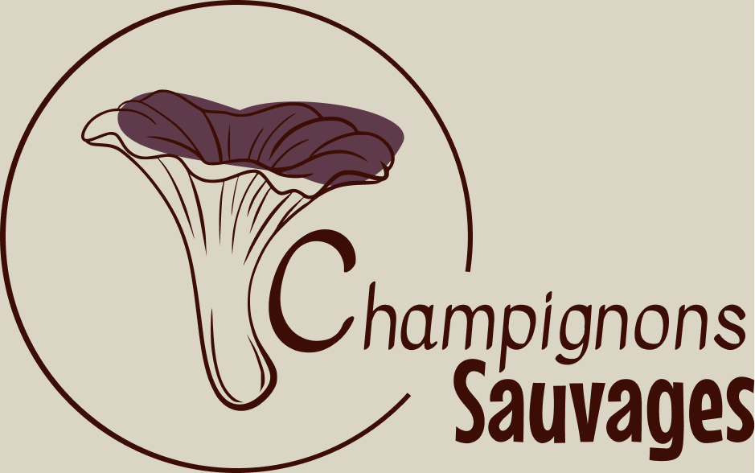
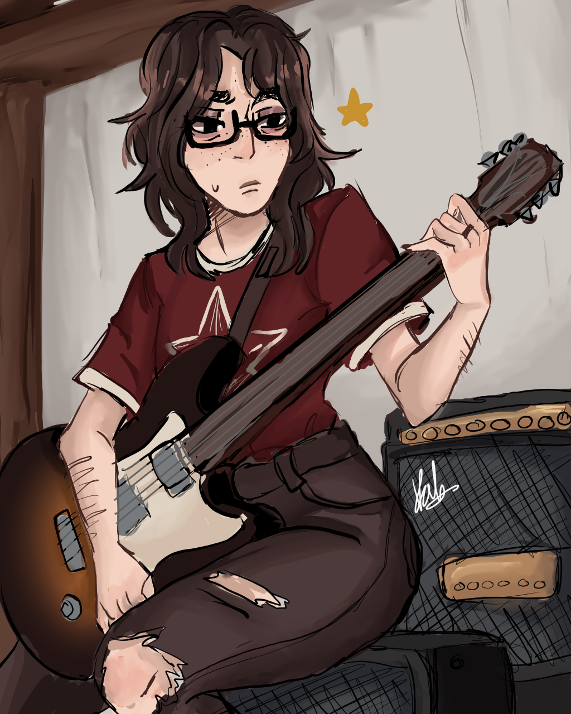
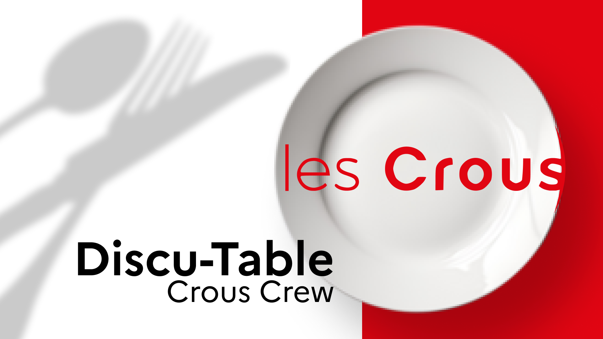
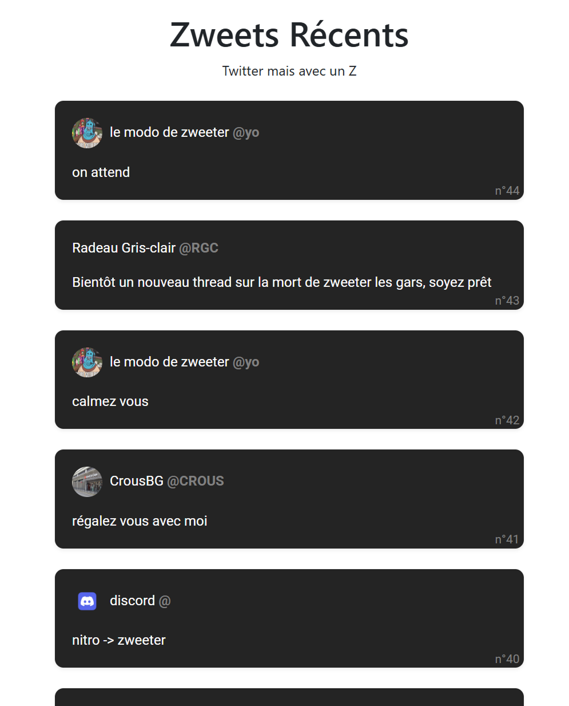

ARTISTE
MULTIMÉDIA &
DÉVELOPPEUR.
Bienvenue dans mon univers. Je suis Val Lombart-Bertolus, étudiant MMI passionné par la création visuelle, le code et tout ce qui touche aux étoiles.

À PROPOS.
J'aime explorer. Que ce soit dans un donjon de jeu vidéo, dans les couches de code d'un site web, ou sur une toile numérique.
Entre créativité et technologie, j’ai trouvé mon équilibre en BUT Métiers du Multimédia et de l’Internet et aujourd'hui en 2ème année, mon objectif est clair : Mettre en lumière ma polyvalence pour créer l’avenir à mon image !
Télécharger mon CVDATA_BASE_PERSO.txt
Ce qui m'inspire au quotidien
Jeux Vidéo
- Baldur's Gate III RPG
- Fear & Hunger Horror RPG
- Cult of the Lamb Rogue/Gestion
- Mouthwashing Horror
- Zelda Twilight Princess Aventure
Séries
- Good Omens Fantasy
- Sherlock (2011) Drama
- House MD Medical
- Fleabag Comedy
- Attack on Titan Anime
Musique
- Oh Ana Mother Mother
- Christmas Kids Roar
- Good Old Fashioned... Queen
- Kid & Leveret Yaelokre
- Jigsaw Falling... Radiohead
PROJETS SÉLECTIONNÉS.








Champignons Sauvages
Refonte du site Champignons Sauvages
En savoir plus

